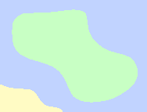
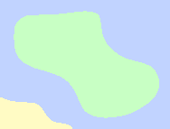

Mina
The island of Mina consists largely of a sandy desert which has been found to predate much of the rest of Karvaea. This has made it quite of interest to researchers, who frequently visit the region.
Creatures in Mina have largely adopted a burrowing lifestyle, leaving much of the surface appear to look rather devoid of life. With much of these creatures seeming to adopt a fish-like body plan to swim beneath the sands, some have joked that Mina just happens to be a sandier part of the ocean.
Close